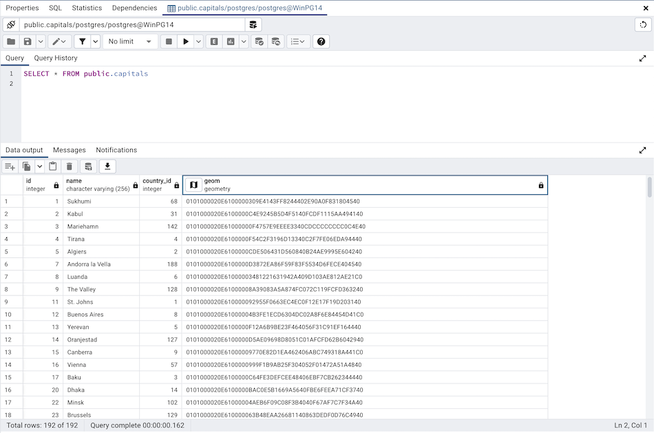
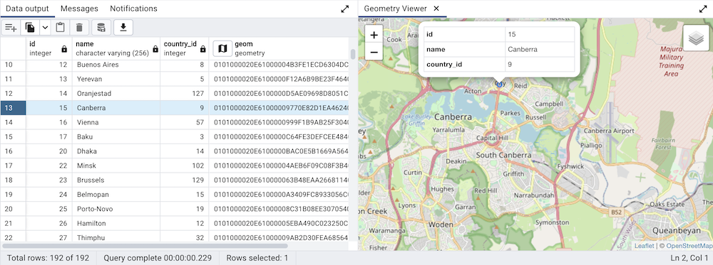
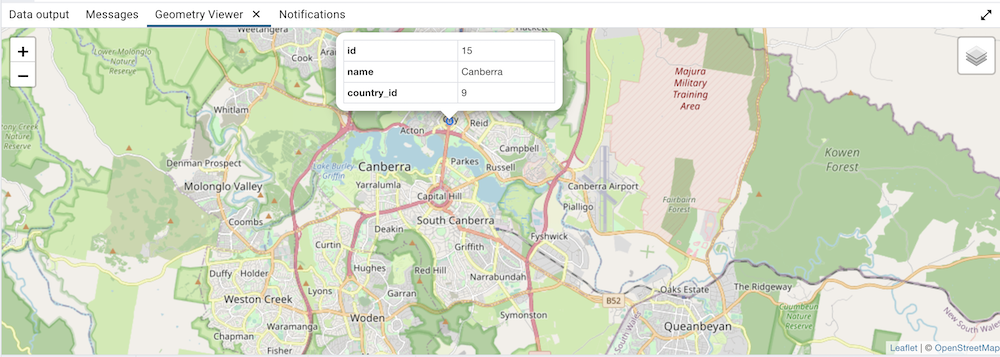
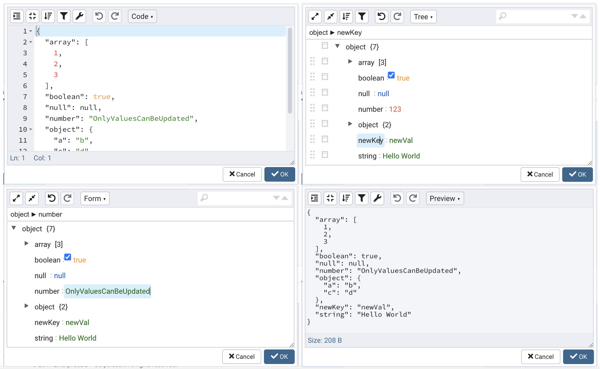
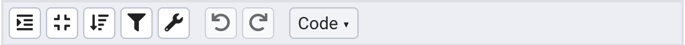
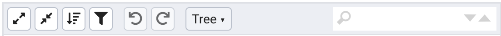
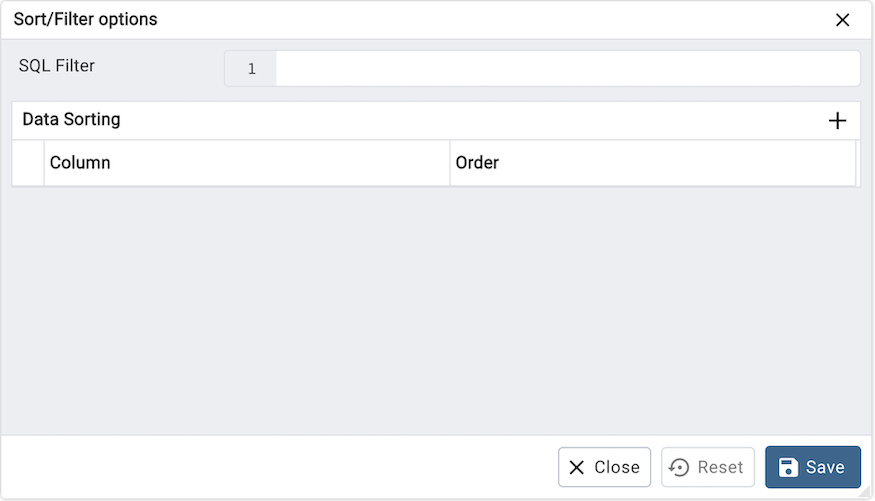

View/Edit Data¶
To view or modify data, right click on a table or view name in the Browser tree control. When the context menu opens, use the View/Edit Data menu to specify the number of rows you would like to display in the editor panel.
To modify the content of a table, each row in the table must be uniquely identifiable. If the table definition does not include an OID or a primary key, the displayed data is read only. Note that views cannot be edited; updatable views (using rules) are not supported.
The editor features a toolbar that allows quick access to frequently used options, and a work environment divided into two panels:
The upper panel displays the SQL command that was used to select the content displayed in the lower panel.
The lower panel (the Data Grid) displays the data selected from the table or view.
The View/Edit Data Toolbar¶
The Query Tool and View/Edit Data tools are actually different operating modes of the same tool. Some controls will be disabled in either mode. Please see The Query Tool Toolbar for a description of the available controls.
The Data Grid¶
The top row of the data grid displays the name of each column, the data type, and if applicable, the number of characters allowed. A column that is part of the primary key will additionally be marked with [PK].
To modify the displayed data:
To change a numeric value within the grid, double-click the value to select the field. Modify the content in the square in which it is displayed.
To change a non-numeric value within the grid, double-click the content to access the edit bubble. After modifying the contentof the edit bubble, click the Ok button to display your changes in the data grid, or Cancel to exit the edit bubble without saving.
To enter a newline character, click Ctrl-Enter or Shift-Enter. Newline formatting is only displayed when the field content is accessed via an edit bubble.
To add a new row to the table, enter data into the last (unnumbered) row of the table. As soon as you store the data, the row is assigned a row number, and a fresh empty line is added to the data grid.
To write a SQL NULL to the table, simply leave the field empty. When you store the new row, the will server fill in the default value for that column. If you store a change to an existing row, the value NULL will explicitly be written.
To write an empty string to the table, enter the special string ‘’ (two single quotes) in the field. If you want to write a string containing solely two single quotes to the table, you need to escape these quotes, by typing ''
To delete a row, press the Delete toolbar button. A popup will open, asking you to confirm the deletion.
To commit the changes to the server, select the Save Data toolbar button.
Geometry Data Viewer
If PostGIS is installed, you can view GIS objects in a map by selecting row(s) and clicking the ‘View Geometry’ button in the column. If no rows are selected, the entire data set will be rendered:
You can adjust the layout by dragging the title of the panel. To view the properties of the geometries directly in map, just click the specific geometry:
Note
Supported data types: The Geometry Viewer supports 2D and 3DM geometries in EWKB format including Point, LineString, Polygon MultiPoint, MultiLineString, MultiPolygon and GeometryCollection.
SRIDs: If there are geometries with different SRIDs in the same column, the viewer will render geometries with the same SRID in the map. If SRID=4326 the OSM tile layer will be added into the map.
Data size: For performance reasons, the viewer will render no more than 100000 geometries, totaling up to 20MB.
Internet access: An internet connection is required for the Geometry Viewer to function correctly.
JSON Data Editor
A built in json editor is provided for JSON/JSONB Data.Double clicking on json/jsonb data type cell in data grid will open JSON Editor.Editor provides different mode to view and edit json data.
Code Mode: Provides way to format & compact json data.Also provides ability to repair json data by fixing quotes and escape characters, removing comments and JSONP notation and turn JavaScript objects into JSON.
Tree Mode: Enabled to change, add, move, remove, and duplicate fields and values.Provides ability to searh & hilight data.
Form Mode: Allows only to edit values in json data there by providing ability to keep data structure unchanged while editing.
Preview Mode: Provides ability to check data before saving and also shows size of current json data. Format and compact json data as well.
Editor Toolbar
Different options are provided to manipulate json data.
Code/Preview mode:
Tree/Form mode:
Icon |
Behavior |
Available in mode |
|---|---|---|
Format Json |
Click to Format Json format json data with proper indentation. |
Code, Preview |
Compact Json |
Click to Compact Json get compacted json data. |
Code, Preview |
Sort |
Click to Sort icon to set sorting criteria for the data using file values. |
Code, Preview, Tree |
Transform |
Click to Transform to filter data using JSME query language. |
Code, Preview, Tree |
Undo |
Click to Undo to undo last action performed on data . |
Code, Preview, Tree, From |
Redo |
Click to Redo to repat last action performed on data . |
Code, Preview, Tree, From |
Mode |
Click to Mode dropdown to change dipaly mode of editor.Different modes avaialble are Code, Preview, Tree, From. |
Code, Tree, From, Preview |
Expand All |
Click to Expand All to expand json data. |
Tree, From |
Collapse All |
Click to Redo to collapse json data. |
Tree, From |
Search Box |
Enter partial/complete string to search in data. |
Tree, From |
Sort/Filter options dialog¶
You can access Sort/Filter options dialog by clicking on Sort/Filter button. This allows you to specify an SQL Filter to limit the data displayed and data sorting options in the edit grid window:
Use SQL Filter to provide SQL filtering criteria. These will be added to the “WHERE” clause of the query used to retrieve the data. For example, you might enter:
id > 25 AND created > '2018-01-01'
Use Data Sorting to sort the data in the output grid
To add new column(s) in data sorting grid, click on the [+] icon.
Use the drop-down Column to select the column you want to sort.
Use the drop-down Order to select the sort order for the column.
To delete a row from the grid, click the trash icon.
Click the Save button to save work.
Click the Close button to discard current changes and close the dialog.